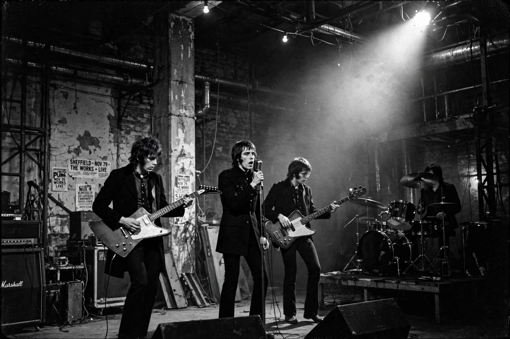

Post-punk is a broad genre of music that emerged in the late 1970s in the wake of punk rock. Post-punk musicians departed from punk's raw simplicity, instead adopting avant-garde sensibilities and non-rock influences, while retaining punk's energy and DIY ethic.
Key early acts included Public Image Ltd, Joy Division, Siouxsie and the Banshees, Wire, Gang of Four, The Fall, Talking Heads, and Pere Ubu. Labels such as Factory Records became central.
Angular guitar, prominent basslines, motorik or danceable rhythms, synthesisers, studio experimentation inspired by dub production, and lyrical concerns with alienation and politics.
Post-punk influenced alternative rock, gothic rock, industrial, and dance-punk. A revival in the early 2000s included Interpol, Franz Ferdinand, Editors, and later Idles, Fontaines D.C., and Wet Leg.
See also: Punk rock, New wave music